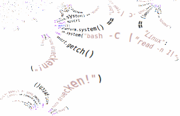
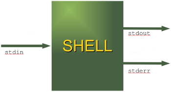
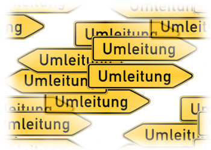

sys-Modul
Information on the Python Interpreter

Like all the other modules, the sys module has to be imported with the import statement, i.e.
import sys
If there are questions about the import statement, we recommend the introductory chapter of
our basic course concerning this topic
Modular Programming and Modules
The sys module provides information about constants, functions and methods of the Python
interpreter. dir(system) gives a summary of the available constants, functions and methods.
Another possibility is the help() function. Using help(sys) provides valuable datail information.
The module sys informs e.g. about the maximal recursion depth
(sys.getrecursionlimit() ) and provides the possibility to change ist
(sys.setrecursionlimit())
The current version number of Python can be accessed as well:
>>> import sys >>> sys.version '2.6.5 (r265:79063, Apr 16 2010, 13:57:41) \n[GCC 4.4.3]' >>> sys.version_info (2, 6, 5, 'final', 0) >>>
Command-line arguments
Lots of scripts need access to the arguments passed to the script, when the script was started.argvargv (or to be precise
sys.argv) is a list, which
contains the command-line arguments passed to the script.
The first item of this list contains the name of the script itself. The arguments
follow the script name.
The following script iterates over the
sys.argv list :
#!/usr/bin/python
import sys
# it's easy to print this list of course:
print sys.argv
# or it can be iterated via a for loop:
for i in range(len(sys.argv)):
if i == 0:
print "Function name: %s" % sys.argv[0]
else:
print "%d. argument: %s" % (i,sys.argv[i])
We save this script as arguments.py. If we call it, we get the following
output::
$ python arguments.py arg1 arg2 ['arguments.py', 'arg1', 'arg2'] Function name: arguments.py 1. argument: arg1 2. argument: arg2 $
Changing the output behaviour of the interactive Python shell
Python's interactive mode is one of the things which make Python special among other programming languages like Perl or Java. As we have seen in the chapter Interactive mode of our introductory tutorial, it's enough to write aan expression on the command line and get back a meaningful output. However some users might prefer a different output behaviour. To change the way the interpreter prints interactively entered expressions, you will have to rebindsys.displayhook to a callable object.
We will demonstrate this in the following interactive example session:
>>> import sys >>> x = 42 >>> x 42 >>> import sys >>> def my_display(x): ... print "out: ", ... print x ... >>> sys.displayhook = my_display >>> x out: 42 >>> >>> print x 42
We can see from this example, that the standard behaviour of the print() function will not be changed.
Standard data streams
 Every serious user of a UNIX or Linux operating system knows standard streams, i.e. input, standard output and standard error. They are known as pipes. They are commonly abbreviated as stdin, stdout, stderr.The standard input (stdin) is normally connected to the keyboard, while the standard error and standard output go to the terminal (or window) in which you are working.
These data streams can be accessed from Python via the objects of the sys module with the same names, i.e. sys.stdin, sys.stdout and sys.stderr.
>>> import sys >>> for i in (sys.stdin, sys.stdout, sys.stderr): ... print(i) ...The following example illustrates the usage of the standard data streams:', mode 'w' at 0x7f3397a2c150> ', mode 'w' at 0x7f3397a2c1e0> >>>
>>> import sys
>>> print "Going via stdout"
Going via stdout
>>> sys.stdout.write("Another way to do it!\n")
Another way to do it!
>>> x = raw_input("read value via stdin: ")
read value via stdin: 42
>>> print x
42
>>> print "type in value: ", ; sys.stdin.readline()[:-1]
type in value: 42
'42'
>>>
The following example combines input and output:
import sys
while True:
# output to stdout:
print "Yet another iteration ..."
try:
# reading from sys.stdin (stop with Ctrl-D):
number = raw_input("Enter a number: ")
except EOFError:
print "\nciao"
break
else:
number = int(number)
if number == 0:
print >> sys.stderr, "0 has no inverse"
else:
print "inverse of %d is %f" % (number, 1.0/number)
If we save the previous example under "streams.py" and use a file called
"number.txt" with numbers (one number per line) for the input,
we can call the script in the following way from the Bash shell:
$ python streams.py < numbers.txtIt's also possible to redirect the output into a file:
$ python streams.py < numbers.txt > output.txtNow the only output left in the shell will be:
0 has no inversebecause this comes via the sterr stream.
Redirections
 There is hardly a user of a Linux or a Unix Shell, e.g. the Bourne or the Bash Shell, who hasn't used input or output redirections. It's not exaggerated to say, that a usefull work is not possible without redirections.The standard output (stdout) can be redirected e.g. into a file, so that we can process this file later with another program. The same is possible with the standard error stream, we can redirect it into a file as well. We can redirect both stderr and stdout into the same file or into separate files.
The following script should be self-explanatory. But nevertheless here are some explanations: The first statement uses the regular standard output (stdout), i.e. the text "Coming through stdout" will be printed into the terminal from which the script has been called. In the next line we are storing the standard output channel in the variable save_stdout, so that we will be capable of restoring the original state at a later point in the script. After this we open a file "test.txt" for writing. After the statement
sys.stdout = fh all print statements will directly print into this file. The original
condition is restored with sys.stdout = save_stdout.
import sys
print("Coming through stdout")
# stdout is saved
save_stdout = sys.stdout
fh = open("test.txt","w")
sys.stdout = fh
print("This line goes to test.txt")
# return to normal:
sys.stdout = save_stdout
fh.close()
The following example shows how to redirect the standard error stream into a file:
import sys
save_stderr = sys.stderr
fh = open("errors.txt","w")
sys.stderr = fh
x = 10 / 0
# return to normal:
sys.stderr = save_stderr
fh.close()
It's posible to write into the error stream directly, i.e. without changing the general output behaviour. This can be achieved by appending
>> sys.stderr to a print statement.
import sys
save_stderr = sys.stderr
fh = open("errors.txt","w")
sys.stderr = fh
print >> sys.stderr, "printing to error.txt"
# return to normal:
sys.stderr = save_stderr
fh.close()
Other interesting Variables and Constants in the sys Module
| Name | Description | |
|---|---|---|
| byteorder | An indicator of the native byte order. The following output was created on a Linux machine and Python 2.6.5: >>> sys.byteorder 'little' >>>The value will be 'big' on big-endian (most-significant byte first) platforms, and 'little' on little-endian (least-significant byte first) platforms. |
|
| executable | A string containing the name of the executable binary (path and executable file name) for the Python interpreter. E.g. "c:\\Python31\\python.exe on Windows 7 or "/usr/bin/python" on
Linux.
>>> sys.executable '/usr/bin/python' |
|
| maxint |
This attribute contains the largest positive integer supported by Python's
regular integer type.
The minumum value for the maximal integer value is at least 231-1. The largest negative integer corresponds to the value of - maxint - 1. This asymmetry results from the use of 2's complement binary arithmetic. The value of maxint depends on the operating system. Remark concerning Python 3.X: The sys.maxint constant was removed with Python 3.0, since there is no longer a limit to the values of integers. However, sys.maxsize can be used as an integer larger than any practical list or string index. It conforms to the implementation's "natural" integer size and is typically the same as sys.maxint in previous releases on the same platform (assuming the same build options). |
|
| maxsize | The largest positive integer supported by the platform's Py_ssize_t type, and thus the maximum size lists, strings, dicts, and many other containers can have.||
| maxunicode | An integer giving the largest supported code point for a Unicode character. The value of this depends on the configuration option that specifies whether Unicode characters are stored as UCS-2 or UCS-4. | |
| modules | The value of sys.modules is a dictionary mapping the names of modules to modules which have already been loaded. This can be manipulated e.g. to enforce the reloading of modules. Note that removing a module from this dictionary is not the same as calling reload() on the corresponding module object. | |
| path | Contains the search pyth, where Python is looking for modules.
>>> sys.path ['', '/usr/lib/python2.6', '/usr/lib/python2.6/plat-linux2', '/usr/lib/python2.6/lib-tk', '/usr/lib/python2.6/lib-old', '/usr/lib/python2.6/lib-dynload', '/usr/lib/python2.6/dist-packages', '/usr/lib/python2.6/dist-packages/PIL', '/usr/lib/python2.6/dist-packages/gst-0.10', '/usr/lib/pymodules/python2.6', '/usr/lib/python2.6/dist-packages/gtk-2.0', '/usr/lib/pymodules/python2.6/gtk-2.0', '/usr/lib/python2.6/dist-packages/wx-2.8-gtk2-unicode', '/usr/local/lib/python2.6/dist-packages'] >>> |
|
| platform | Name of the platform on which Python is running, e.g. "linux2" for
Linux and "win32" for Windows
>>> sys.platform 'linux2' >>> |
|
| version | Version number of the Python interpreter
>>> sys.version '2.6.5 (r265:79063, Apr 16 2010, 13:57:41) \n[GCC 4.4.3]' >>> |
|
| version_info | Similiar information than sys.version, but the output is a tuple
containing the five components of the version number: major, minor, micro, releaselevel, and serial.
The values of this tuple are integers except the value for the release level, which is one of the
following: 'alpha', 'beta', 'candidate', or 'final'.
>>> sys.version_info (2, 6, 5, 'final', 0) >>> |
|
| __stdin__ __stdout__ __stderr__ |
These attributes contain the original values of stdin, stderr and stdout at the start of the program. They can be useful to print to the actual standard stream no matter if the sys.std* object has been redirected. They can also be used to restore the actual files to known working file objects in case they have been overwritten with a broken object. But instead of using these values, the original stream should always be explicitly saved in a variable (as shown in our previous examples) before replacing it, and the original state should be restored by using the saved object. | |
| getrecursionlimit() setrecursionlimit(limit) |
getrecursionlimit() returns the current value of the recursion limit,
the maximum depth of the Python interpreter stack. This limit prevents
infinite recursion from causing an overflow of the C stack and
crashing Python.
>>> sys.getrecursionlimit() >>> 1000 setrecursionlimit(limit) sets the maximum depth of the Python interpreter stack to the value of "limit". |